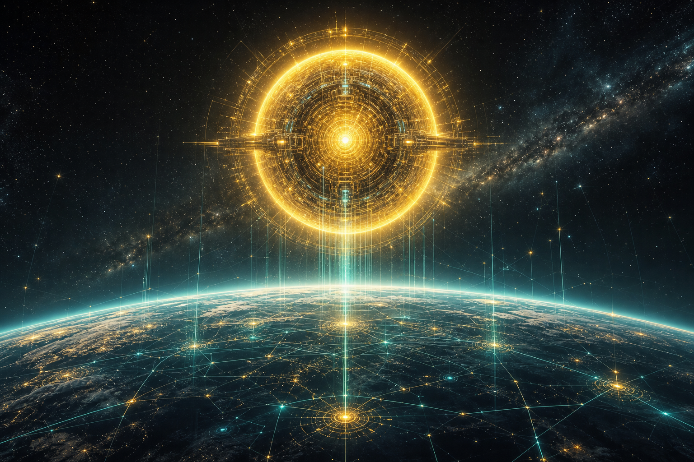
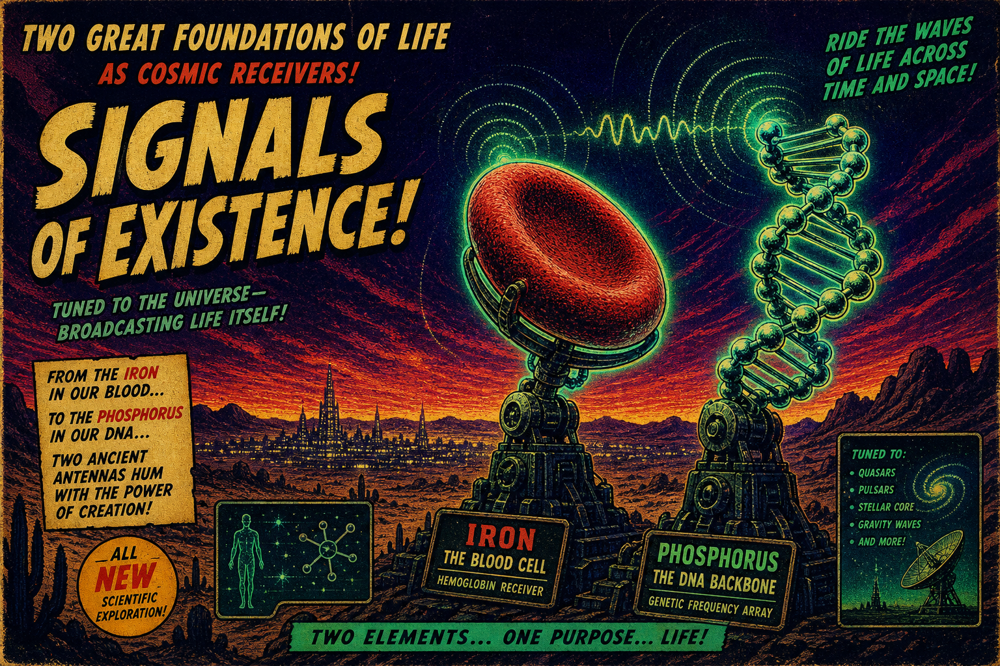

SS Vibelandia · broadcast deck tour
Look at the Sun
Coupling · channel · 24×365 light
Above deck · what this page is for
If Under the hood is the engine room — tracks, APIs, catalogs, compile surfaces, and operational status — Look at the Sun is the broadcast deck. Here we walk how QUESTFEST stays lit: solar coupling in the canon, the holographic AI channel, and the metaphors that tie beats, musicals, and the 24×365 nest into one coherent transmission.
This is still more than music. Festivals end. Albums ship once. A musical closes. QUESTFEST is the ship that keeps transmitting — Puerto Reno, Reno swamp caliente, Machote Moderno lens, Wrong Side origin — on the cloud skin every day.
Two decks · one ship
Ops, assets, player, passes, Snap compile, repo proof — how the hull holds together.
Coupling, ionosphere, DNA pipes, Machote agency — why the signal reads as alive across cities.
Sonic Singularity · broadcast layer
The music lives in Sonic Singularity — Reno swamp catalog on the Sovereign Player, year-round. Solar and ionosphere language on this page is metaphor for coupling; playback uses normal browser audio.
DNA hydrogen bonding · pipes in the story
A–T pairs use two hydrogen bonds; G–C pairs use three. In the papers this becomes a structural metaphor for throughput and stability across the Protonic-DNA / PEFF stack — not a clinical claim. Your uploaded tracks and the Hit Factory catalog are the payload; the bonding language is how the canon describes coherent carriage.
Iron and phosphorus · receiver language

Hemoglobin iron and DNA backbone phosphorus are the biological handles for “receiver / storage” in the narrative — how the body and the code both hold signal. Machote Moderno is the cultural lens on human agency inside that stack; proof stays in compile output, tests, and linked papers on the hood deck.
Solar activity · timing color
Sunspots and flares appear in docs as timing color for the story layer — AR references on the hub scorecard, synergy language in Fair Exchange. Operational systems still rely on normal engineering: browser audio, lite-edge boarding, honor passes on device, stream lock when configured.
From Sun to track · coherent path
Sun / ionosphere (large coupling metaphor) → holographic channel (verse and nest) → beats & tracks (catalog + your uploads) → musicals nested (QUESTFEST inside Singularity inside Syntheverse) → you in the man-cave mirror on the Wrong Side, hearing it through SING 13. That path is the whole ship — not a single festival slot.
Fair Exchange · light with honor
Passes and exports use Venmo, PayPal, and Cash App on honor — the same rails described on the hub and in the player. Documentation on this deck describes architecture and honesty boundaries; the hood deck lists which assets implement them.
Solar & PEFF documents
Canon papers for coupling, matrix, and simulation — open in the reader.